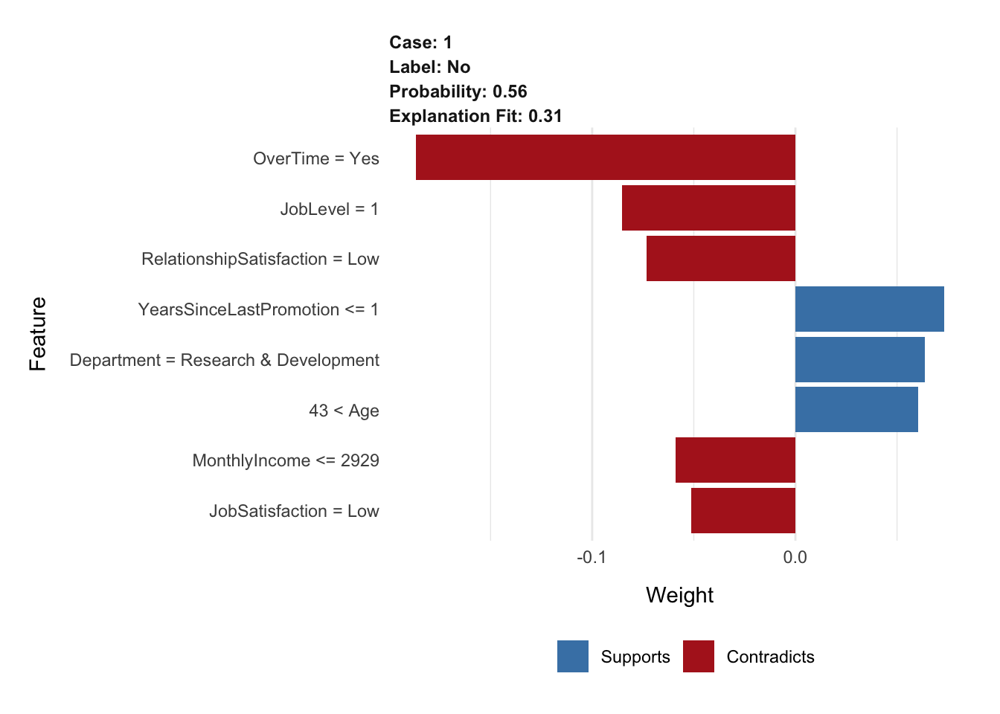
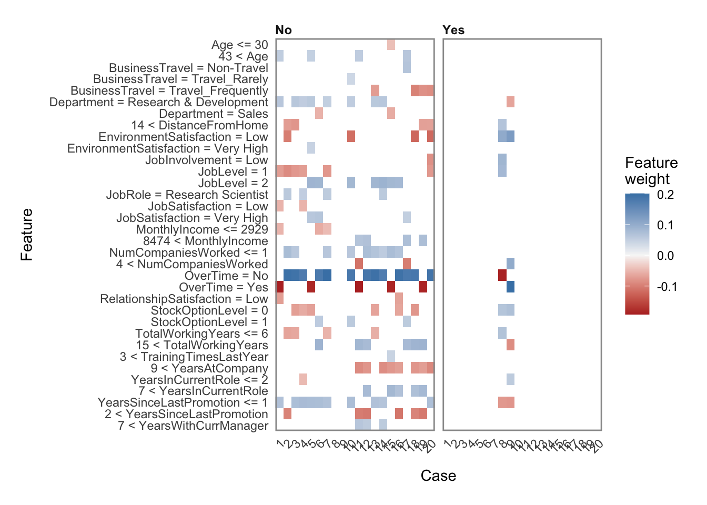
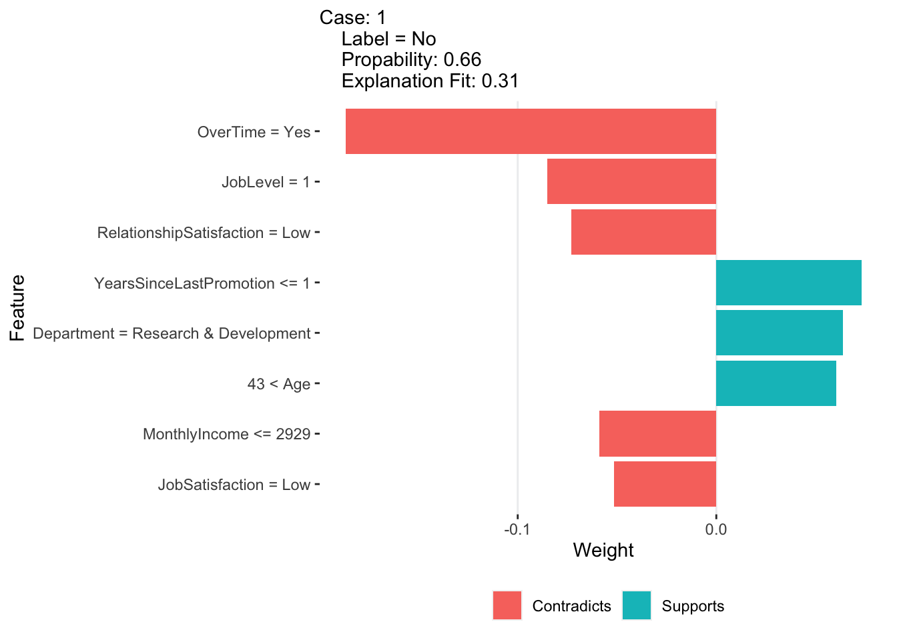
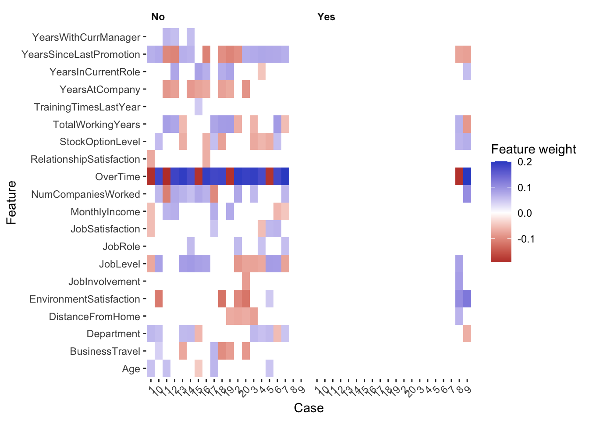

10 Challenge Explainable
Olawole Famakin
2021-04
IMPORTANT: –
1 Challenge Explainable
Last compiled: 2022-03-31
# Libraries
library(h2o)
library(recipes)
library(readxl)
library(tidyverse)
library(tidyquant)
library(lime)
library(tidymodels)
#Part 1
# Data
employee_attrition_tbl <- read_csv("00_data/HR.csv")
definitions_raw_tbl <- read_excel("00_data/data_definitions.xlsx", sheet = 1, col_names = FALSE)
# Processing Pipeline
#Function from previous script
process_hr_data_readable <- function(data, definitions_tbl) {
definitions_list <- definitions_tbl %>%
fill(...1, .direction = "down") %>%
filter(!is.na(...2)) %>%
separate(...2, into = c("key", "value"), sep = " '", remove = TRUE) %>%
rename(column_name = ...1) %>%
mutate(key = as.numeric(key)) %>%
mutate(value = value %>% str_replace(pattern = "'", replacement = "")) %>%
split(.$column_name) %>%
map(~ select(., -column_name)) %>%
map(~ mutate(., value = as_factor(value)))
for (i in seq_along(definitions_list)) {
list_name <- names(definitions_list)[i]
colnames(definitions_list[[i]]) <- c(list_name, paste0(list_name, "_value"))
}
data_merged_tbl <- list(HR_Data = data) %>%
append(definitions_list, after = 1) %>%
reduce(left_join) %>%
select(-one_of(names(definitions_list))) %>%
set_names(str_replace_all(names(.), pattern = "_value",
replacement = "")) %>%
select(sort(names(.))) %>%
mutate_if(is.character, as.factor) %>%
mutate(
BusinessTravel = BusinessTravel %>% fct_relevel("Non-Travel",
"Travel_Rarely",
"Travel_Frequently"),
MaritalStatus = MaritalStatus %>% fct_relevel("Single",
"Married",
"Divorced")
)
return(data_merged_tbl)
}
#Apply function
employee_attrition_readable_tbl <- process_hr_data_readable(employee_attrition_tbl, definitions_raw_tbl)
# Split into test and train
set.seed(seed = 1113)
split_obj <- rsample::initial_split(employee_attrition_readable_tbl, prop = 0.85)
# Assign training and test data
train_readable_tbl <- training(split_obj)
test_readable_tbl <- testing(split_obj)
# ML Preprocessing Recipe
recipe_obj <- recipe(Attrition ~ ., data = train_readable_tbl) %>%
step_zv(all_predictors()) %>%
step_mutate_at(c("JobLevel", "StockOptionLevel"), fn = as.factor) %>%
prep()
train_tbl <- bake(recipe_obj, new_data = train_readable_tbl)
test_tbl <- bake(recipe_obj, new_data = test_readable_tbl)
# 2. Models ----
#New Model
h2o.init()## Connection successful!
##
## R is connected to the H2O cluster:
## H2O cluster uptime: 5 minutes 46 seconds
## H2O cluster timezone: Europe/Berlin
## H2O data parsing timezone: UTC
## H2O cluster version: 3.36.0.3
## H2O cluster version age: 1 month and 15 days
## H2O cluster name: H2O_started_from_R_famakinolawole_drs368
## H2O cluster total nodes: 1
## H2O cluster total memory: 1.68 GB
## H2O cluster total cores: 4
## H2O cluster allowed cores: 4
## H2O cluster healthy: TRUE
## H2O Connection ip: localhost
## H2O Connection port: 54321
## H2O Connection proxy: NA
## H2O Internal Security: FALSE
## R Version: R version 4.1.1 (2021-08-10)split_h2o <- h2o.splitFrame(as.h2o(train_tbl), ratios = c(0.85), seed = 1113)##
|
| | 0%
|
|======================================================================| 100%train_h2o <- split_h2o[[1]]
valid_h2o <- split_h2o[[2]]
test_h2o <- as.h2o(test_tbl)##
|
| | 0%
|
|======================================================================| 100%y <- "Attrition" #target
x <- setdiff(names(train_h2o), y) #preductors
automl_models_h2o <- h2o.automl(
x = x,
y = y,
training_frame = train_h2o,
validation_frame = valid_h2o,
leaderboard_frame = test_h2o,
max_runtime_secs = 30,
nfolds = 5
)##
|
| | 0%
## 20:39:38.935: User specified a validation frame with cross-validation still enabled. Please note that the models will still be validated using cross-validation only, the validation frame will be used to provide purely informative validation metrics on the trained models.
|
|=== | 4%
|
|===== | 7%
|
|======= | 11%
|
|========== | 14%
|
|============ | 18%
|
|=============== | 21%
|
|================= | 25%
|
|==================== | 29%
|
|======================= | 32%
|
|========================= | 36%
|
|============================ | 40%
|
|=============================== | 44%
|
|================================= | 47%
|
|==================================== | 51%
|
|====================================== | 55%
|
|========================================= | 59%
|
|============================================ | 62%
|
|============================================== | 66%
|
|================================================= | 69%
|
|=================================================== | 73%
|
|====================================================== | 76%
|
|======================================================== | 80%
|
|========================================================== | 84%
|
|============================================================= | 87%
|
|=============================================================== | 91%
|
|================================================================== | 94%
|
|==================================================================== | 98%
|
|======================================================================| 100%automl_leader <- automl_models_h2o@leader
# 3. LIME ----
# 3.1 Making Predictions ----
predictions_tbl <- automl_leader %>%
h2o.predict(newdata = as.h2o(test_tbl)) %>%
as.tibble() %>%
bind_cols(
test_tbl %>%
select(Attrition, EmployeeNumber)
)##
|
| | 0%
|
|======================================================================| 100%
##
|
| | 0%
|
|======================================================================| 100%#Lime for single explanation
# 3.2 Single Explanation ---
explainer <- train_tbl %>%
select(-Attrition) %>%
lime(
model = automl_leader,
bin_continuous = TRUE,
n_bins = 4,
quantile_bins = TRUE
)
# Feature importance for a single explanation
#Lime for single explanation - Making explanation with explain
explanation_1 <- test_tbl %>%
slice(1) %>%
select(-Attrition) %>%
lime::explain(
# Pass our explainer object
explainer = explainer,
# Because it is a binary classification model: 1
n_labels = 1,
# number of features to be returned
n_features = 8,
# number of localized linear models
n_permutations = 5000,
# Let's start with 1
kernel_width = 1
)##
|
| | 0%
|
|======================================================================| 100%
##
|
| | 0%
|
|======================================================================| 100%# only important
explanation_1 %>%
as.tibble() %>%
select(feature:prediction) #Visualisation of feature importance for a single explanation
plot_features(explanation = explanation_1, ncol = 1)
#Feauture importance for multiple explanations
#Visualisation of feature importance for multiple explanations
explanation_x <- test_tbl %>%
slice(1:20) %>%
select(-Attrition) %>%
lime::explain(
explainer = explainer,
n_labels = 1,
n_features = 8,
n_permutations = 5000,
kernel_width = 0.5
)##
|
| | 0%
|
|======================================================================| 100%
##
|
| | 0%
|
|====== | 9%
|
|======================================================================| 100%explanation_x %>%
as.tibble()#plot_features(explanation = explanation_x, ncol = 4)
plot_explanations(explanation = explanation_x)
# CHALLENGE ---
# Libraries
library(tidyverse)
library(lubridate)
library(ggplot2)
library(dplyr)
# Part 1 --
explanation_1 %>%
as.tibble()case_1 <- explanation_1 %>% #Changing name
as.tibble() # to work with
case_1 %>% #How it should look
plot_features()case_1 %>%
mutate(feature_weight_abs = abs(feature_weight)) %>% #to order
mutate(feature_desc = feature_desc %>% as_factor() %>% fct_reorder(feature_weight_abs)) %>%
mutate(feature_contribution = ntile(feature_weight, 2)) %>%
mutate(feature_contribution = case_when(
feature_weight >= 0 ~ "Supports",
feature_weight < 0 ~ "Contradicts"
)) %>%
ggplot(aes(feature_desc, feature_weight)) +
geom_col(aes(fill = feature_contribution)) +
coord_flip()+
labs(
subtitle = "Case: 1
Label = No
Propability: 0.66
Explanation Fit: 0.31",
x = "Feature",
y = "Weight"
)+
theme(
panel.background = element_rect(fill = 'white'),
panel.grid.major.x = element_line(color = "#edeef0", size = 0.5),
legend.position = "bottom",
legend.title = element_blank()
)
#Bonus - Function to scale to multiple cases
#Bonus - Theme argument to modify look
#Part 2 -
case_x <- explanation_x %>%
as.tibble()
case_x %>% #How it should look
plot_explanations()
#Visualisation
case_x %>%
ggplot(aes(case,feature, fill = feature_weight)) +
geom_tile(show.legend = TRUE) +
#geom_tile(aes(fill = feature_weight)) +
facet_wrap(~label) +
scale_fill_gradient2(low = '#ba362d',
mid = 'white',
high = '#3551cc' ) +
#guides(fill = guide_colourbar(title = "Feature weight"))+
labs(
x = "Case",
y = "Feature",
fill = "Feature weight"
) +
theme(
panel.background = element_rect(fill = 'white'),
axis.text.x = element_text(angle = 45, hjust = 1),
legend.position = "right",
plot.title = element_text(face = "bold"),
plot.caption = element_text(face = "bold.italic"),
strip.text = element_text(face = "bold", hjust = 0),
strip.background = element_rect(FALSE)
)